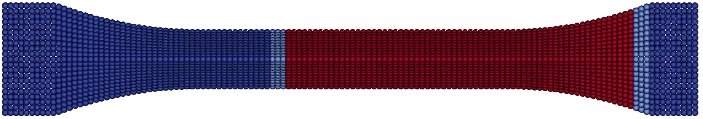

Condensation
Condensation methods can be used to reduce the number of degress of freedom (dof). The condensated dofs should not be updated and therefore no fracture or non-linear behavior should exist in this region. In theory it is possible, but it leads to continuous update of this region and is inefficient.
Guyan Condensation
The system is partitioned into slave $s$ and master $m$ dof [11]:
\[\begin{bmatrix} \mathbf{K}_{mm} & \mathbf{K}_{ms} \\ \mathbf{K}_{sm} & \mathbf{K}_{ss} \end{bmatrix} \begin{bmatrix} \mathbf{u}_m \\ \mathbf{u}_s \end{bmatrix} = \begin{bmatrix} \mathbf{F}_m \\ \mathbf{0} \end{bmatrix} \end{equation}\]
Since $\mathbf{F}_s = \mathbf{0}$, the second block row gives:
\[\begin{equation} \mathbf{K}_{sm}\mathbf{u}_m + \mathbf{K}_{ss}\mathbf{u}_s = \mathbf{0} \quad\Rightarrow\quad \mathbf{u}_s = \mathbf{T}\,\mathbf{u}_m, \qquad \mathbf{T} = -\mathbf{K}_{ss}^{-1}\mathbf{K}_{sm} \end{equation}\]
Substituting into the first block row yields:
\[\begin{equation} \mathbf{K}_{mm}\mathbf{u}_m + \mathbf{K}_{ms}\mathbf{T}\mathbf{u}_m = \mathbf{F}_m \end{equation}\]
which defines the condensed system $\hat{\mathbf{K}}_{mm}\,\mathbf{u}_m = \mathbf{F}_m$ with the condensed stiffness matrix:
\[\begin{equation} \hat{\mathbf{K}}_{mm} = \mathbf{K}_{mm} - \mathbf{K}_{ms}\mathbf{K}_{ss}^{-1}\mathbf{K}_{sm} = \mathbf{K}_{mm} - \mathbf{K}_{ms}\mathbf{T} \end{equation}\]
Following Guyan [11] for dynamic problems, the mass matrix $\mathbf{M}$, which is diagonal in the PD discretization, is condensed analogously using the same transformation $\mathbf{T}$:
\[\begin{equation} \hat{\mathbf{M}}_{mm} = \mathbf{M}_{mm} + \mathbf{T}^T\mathbf{M}_{ss}\mathbf{T} \end{equation}\]
where $\mathbf{M}_{mm}$ and $\mathbf{M}_{ss}$ are the diagonal mass submatrices of the master and slave partitions, respectively. The product $\mathbf{T}^T\mathbf{M}_{ss}\mathbf{T}$ introduces off-diagonal coupling, so $\hat{\mathbf{M}}_{mm}$ is generally full. The condensed dynamic system is:
\[\begin{equation} \hat{\mathbf{M}}_{mm}\ddot{\mathbf{u}}_m + \hat{\mathbf{K}}_{mm}\,\mathbf{u}_m = \mathbf{F}_m \end{equation}\]
Several limitations apply. The factorization of $\mathbf{K}_{ss}$ is a one-time preprocessing cost, amortized over all load steps but potentially significant for very large $\Omega_s$. More importantly, $\mathbf{T}$ is computed once from the initial stiffness, so $\Omega_s$ must remain linear elastic and undamaged throughout the simulation. Finally, inertial effects in $\Omega_s$ are neglected; high-frequency waves impinging on the $\Omega_s$/$\Omega_m$ interface are partially reflected rather than correctly transmitted, restricting the approach to quasi-static or low-frequency dynamic fracture problems.
PD–Matrix Coupling within $\Omega_m$
No PDbond may reach into $\Omega_s$, which is enforced by requiring $\Omega_c$ to be at least one horizon $\delta$ wide around $\Omega_p$:
\[\begin{equation} \mathcal{H}_i \subseteq \Omega_m = \Omega_c \cup \Omega_p \quad \forall\, i \in \Omega_p \end{equation}\]
Matrix stiffness entries for bonds entirely within $\Omega_p$ are zeroed, so that $\tilde{\mathbf{K}}_{mm}$ takes the block structure:
\[\begin{equation} \tilde{\mathbf{K}}_{mm}= \begin{bmatrix} \tilde{\mathbf{K}}_{cc} & \tilde{\mathbf{K}}_{cp} \\ \tilde{\mathbf{K}}_{pc} & \mathbf{0} \end{bmatrix} \end{equation}\]
The zero block reflects that \gls{PD}–\gls{PD} interactions are not handled by the stiffness matrix; their force contribution is evaluated at each time step via:
\[\begin{equation} \mathbf{F}_{p,i}^{\text{pd}} = \sum_{j \in \mathcal{H}_i} \left(\underline{\mathbf{T}}_{ij}V_j - \underline{\mathbf{T}}_{ji}V_i\right) \end{equation}\]
Damage and crack propagation enter naturally through bond breakage in $\mathbf{F}_p^{\text{pd}}$, without any modification of $\tilde{\mathbf{K}}_{mm}$.

- Slave nodes (red, $\Omega_s$): Far-field region, condensed out. Must remain linear elastic, undamaged, and carry no external loads.
- Matrix nodes (light blue, $\Omega_c \subset \Omega_m$): Solved via the stiffness matrix. Captures load introduction, boundary conditions, and correct stiffness distributions. Must remain undamaged.
- PD nodes (blue, $\Omega_p \subset \Omega_m$): Damage region. Bond forces are evaluated via the material point formulation at each time step.